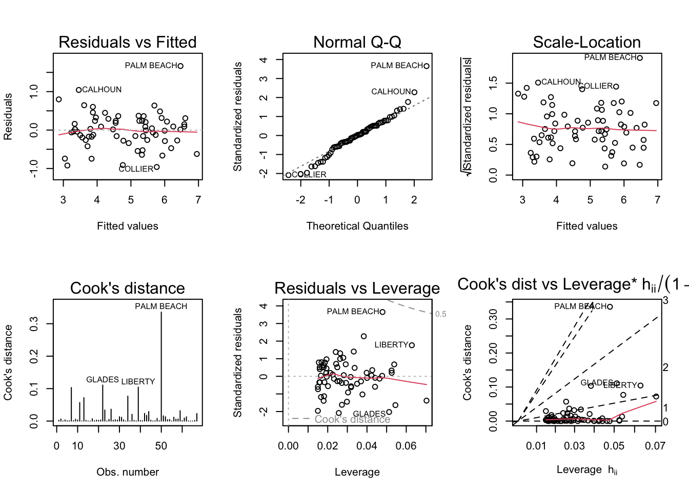

Code
library(readxl)
library(dplyr)
library(magrittr)
library(alr4)
library(smss)
knitr::opts_chunk$set(echo = TRUE)library(readxl)
library(dplyr)
library(magrittr)
library(alr4)
library(smss)
knitr::opts_chunk$set(echo = TRUE)Question 1: A) For backward elimination, Beds would be deleted first because it has the largest p-value. .487 is a very high p-value based on any conventional level of significance.
For forward selection, I would add Size first. It has the highest correlation coefficient. Also, this variable is statistically significant.
Once other variables are controlled for, most of the explanation done by Beds is instead done by other variables. For example, houses with more beds are also larger in size. When Beds is the only explanatory variable, the model attributes the effect of the Size variable to Beds. However, once Size is also in the model and thus controlled for, the p-value of Beds gets larger as it doesn’t really have much explanatory power when it comes to variation in Price that remains unexplained after accounting for Size.
data("house.selling.price.2", package = "smss")
head(house.selling.price.2) P S Be Ba New
1 48.5 1.10 3 1 0
2 55.0 1.01 3 2 0
3 68.0 1.45 3 2 0
4 137.0 2.40 3 3 0
5 309.4 3.30 4 3 1
6 17.5 0.40 1 1 0Running all regression models
full_model <- lm(P ~ ., data = house.selling.price.2)
model_noBeds <- lm(P ~ .-Be, data = house.selling.price.2)
model_noBeds_noBaths <- lm(P ~ S + New, data = house.selling.price.2)
model_size_only <- lm(P ~ S, data = house.selling.price.2)Create a functions to get R-squared, Adjusted R-squared & PRESS
rsquared <- function(fit) summary(fit)$r.squared
adj_rsquared <- function(fit) summary(fit)$adj.r.squared
PRESS <- function(fit) {
pr <- residuals(fit)/(1-lm.influence(fit)$hat)
sum(pr^2)
}For AIC and BIC, the functions AIC() and BIC() can be used
Now, applying the functions to model objects
models <- list(full_model, model_noBeds, model_noBeds_noBaths, model_size_only)
data.frame(models = c('full_model', 'model_noBeds', 'model_noBeds&Baths', 'model_only_size'),
rSquared = sapply(models, rsquared),
adj_rSquared = sapply(models, adj_rsquared),
PRESS = sapply(models, PRESS),
AIC = sapply(models, AIC),
BIC = sapply(models, BIC)) |>
print() models rSquared adj_rSquared PRESS AIC BIC
1 full_model 0.8688630 0.8629022 28390.22 790.6225 805.8181
2 model_noBeds 0.8681361 0.8636912 27860.05 789.1366 801.7996
3 model_noBeds&Baths 0.8483699 0.8450003 31066.00 800.1262 810.2566
4 model_only_size 0.8078660 0.8057546 38203.29 820.1439 827.7417For R-Squared and Adjusted R-Squared, larger values are preferred while for PRESS, AIC and BIC, smaller values are the best.
Here, model using all the variables (full_model) has the highest R-Squared while model with no Beds(model_noBeds) has the highest Adjusted R-Squared.
model_noBeds has the lowest PRESS, AIC and BIC
Question 2:
Loading the data
head(trees) Girth Height Volume
1 8.3 70 10.3
2 8.6 65 10.3
3 8.8 63 10.2
4 10.5 72 16.4
5 10.7 81 18.8
6 10.8 83 19.7tree_model <- lm(Volume ~ Girth + Height, data = trees)
summary(tree_model)
Call:
lm(formula = Volume ~ Girth + Height, data = trees)
Residuals:
Min 1Q Median 3Q Max
-6.4065 -2.6493 -0.2876 2.2003 8.4847
Coefficients:
Estimate Std. Error t value Pr(>|t|)
(Intercept) -57.9877 8.6382 -6.713 2.75e-07 ***
Girth 4.7082 0.2643 17.816 < 2e-16 ***
Height 0.3393 0.1302 2.607 0.0145 *
---
Signif. codes: 0 '***' 0.001 '**' 0.01 '*' 0.05 '.' 0.1 ' ' 1
Residual standard error: 3.882 on 28 degrees of freedom
Multiple R-squared: 0.948, Adjusted R-squared: 0.9442
F-statistic: 255 on 2 and 28 DF, p-value: < 2.2e-16par(mfrow=c(2,3))
plot(tree_model, which = 1:6)
Residuals vs Fitted plot should bounce randomly around the ‘0’ line. Here it is a curve which suggests the violation of linearity assumption. The Scale-Location plot should be approximately horizontal but here it is a curve, eventhough not a perfect one. This suggests the violation of the assumption of Constant Variance. Cook’s distance for observation 31 is clearly larger than 4/n which is 4/31 = 0.129. This is a violation of the assumption of Influential Observation.
Question 3: A)
data('florida')
florida_model <- lm(Buchanan ~ Bush, data = florida)
par(mfrow = c(2,3))
plot(florida_model, which = 1:6)
From the plot, Palm Beach County is largely an outlier.
log_florida_model <- lm(log(Buchanan) ~ log(Bush), data = florida)
par(mfrow = c(2,3))
plot(log_florida_model, which = 1:6)
When we did the log transformation for each variable, the Palm Beach County became less of an outlier but still stands out.